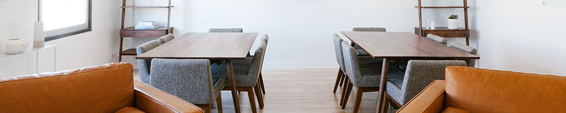
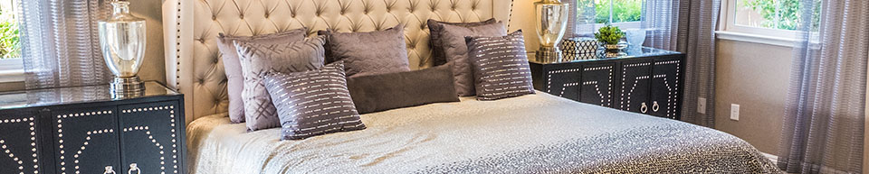
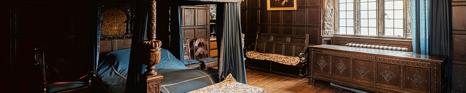

The mid-1900s produced some of the most iconic pieces in modern design. Refined lines, minimalist silhouettes, and natural shapes characterize it. From Saarinen, Niemeyer, Eames, Noguchi and Jacobsen and beyond, the mid-century modern masters defined creative ways to use new materials like molded plastic, plywood, and aluminum in industrial design. Its pieces are highly versatile and can complement a myriad of design styles.
The minimalist trend started in the early twentieth century and continues to pervade many aspects of modern life, interior design included. Initially influenced by the simplicity of Japanese design, minimalism works on the principle that less is more. Minimalist interiors are stripped down to their essential elements and empty space is left to make the design statement. Use color sparingly in minimalist rooms, the idea is not to distract or detract from its simplicity. Black, white and primary colors are often regarded as best for a minimalist space.
The contemporary interior style is current, modern, and constantly evolving. The fluidity of contemporary interior design is particularly exciting – what is considered a contemporary interior now will likely change over the course of the twenty-first century. Today, contemporary interiors feature clean, unadorned spaces. Furniture tends to show exposed legs to create a feeling of space. Metals and glass are popular contemporary materials and intricate details are kept to a minimum.
Shabby chic decor emphasizes vintage elements to recreate the antique flea market look. The furniture are characterized by their aged appearance, with distressed wood composition covered in sanded milk paint to show signs of wear and tear. Decorative accents for shabby chic decor should be soft and opulent, often with an affected feel, in order to bring the overall interior design to a contemporary standard. Generously introduce linen textiles for added style. Though orthodox shabby chic colors are white, ecru and pastel do not be afraid to apply some vibrant colors.